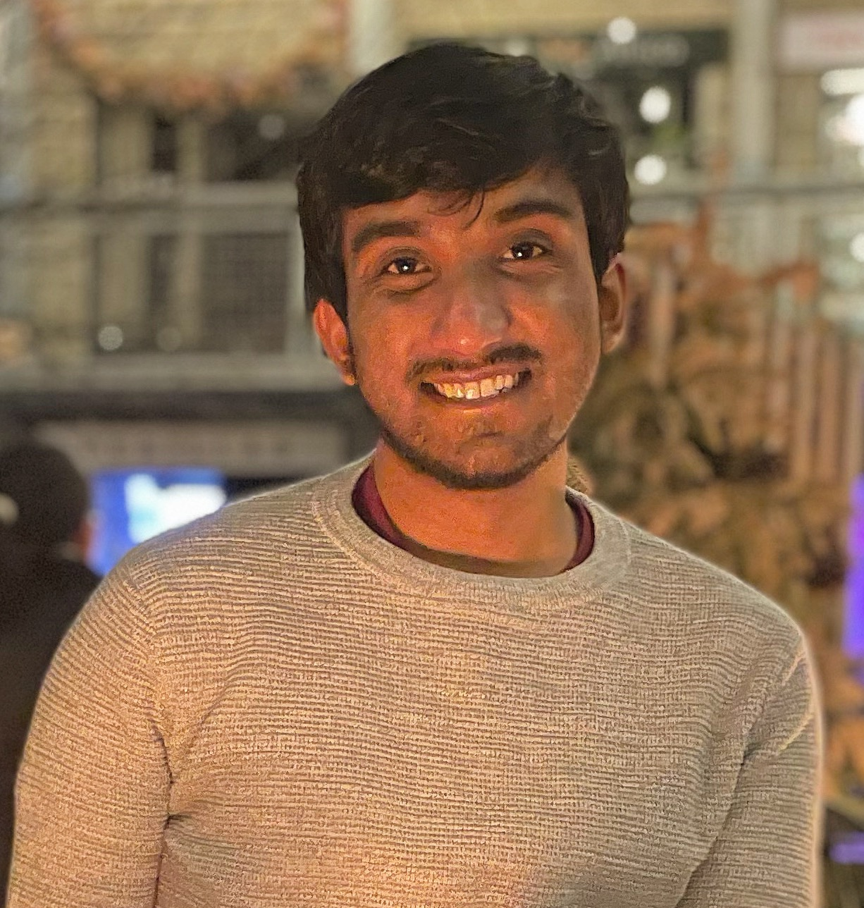
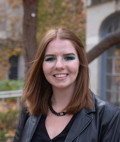
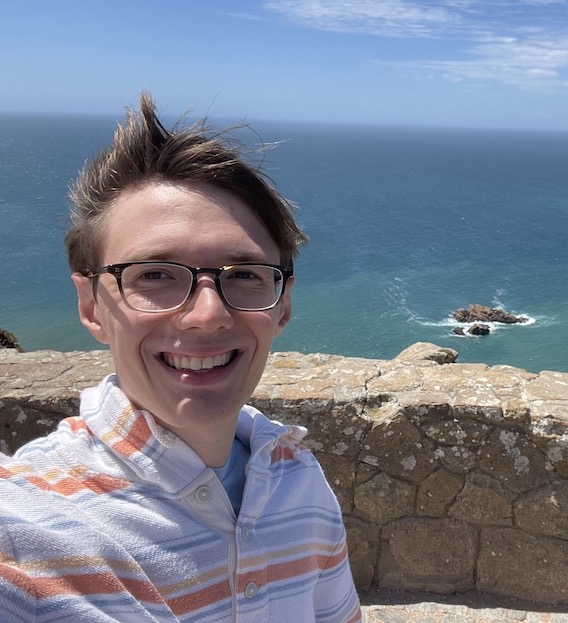
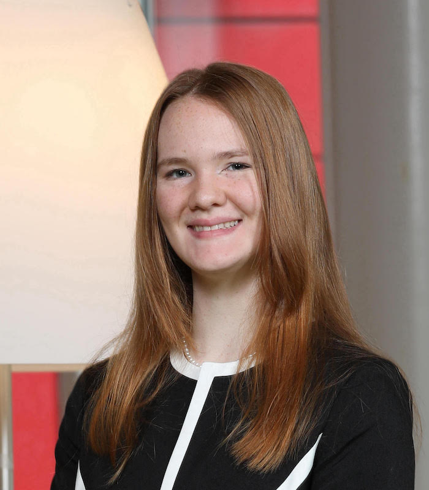
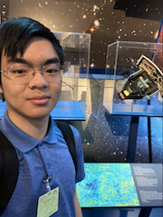

Rahul Jayaraman is a Klarman Postdoctoral Fellow working on multi-wavelength studies of fast transients, using both ZTF and TESS. During his PhD at MIT, he worked on transient detection and characterization using TESS, as well as binary star asteroseismology. Outside of astrophysics, he enjoys climbing, trying new restaurants, and traveling.
Current Group Members


Genevieve Schroeder: Genevieve received her PhD from Northwestern University, though she is originally from the Finger Lakes region of NY. At Northwestern, she used radio telescopes to follow-up gamma-ray bursts. As a postdoc at Cornell, Genevieve continues to utilize radio facilities to observe a wide array of transients. In her leisure time, she likes to check out local thrift and vintage stores, and relax in her sunroom with her cat, Juliette.
Cassie Sevilla: Cassie is a third-year graduate student at Cornell working on fast blue optical transients. Her hobbies include reading and playing video games and board games.
Michael Camilo: Michael received his B.S. in Physics with a concentration in Astronomy from Montclair State University. He is a second-year graduate student at Cornell, working on modelling synchrotron emitting shocks from supernovae. He enjoys trying out new burger spots and watching films in his downtime.
Marquice Sanchez-Fleming: Marquice is a junior at Cornell majoring in physics and minoring in astronomy. His research with Professor Anna Ho is on cross-matching data from the ZTF Bright Transient Survey with radio the VLA Sky Survey. He is also a keyholder and club member of the Cornell Astronomical Society, which entails helping to run open houses at the Fuertes Observatory every Friday night. In his free time, he enjoys reading physics textbooks, playing badminton, engaging in ameteur radio astronomy, and fixing telescopes.

Jack Pope: Jack is a senior at Cornell University majoring in physics and data science. His research involves matching radio and optical transients from VLASS and the ZTF Bright Transient Survey to probe for and classify FBOT and afterglow candidates. In his free time, Jack loves basketball, board games, practicing piano, and exploring hiking trails.

Amaliya Atamalibekova: Amaliya is a sophomore at Cornell University majoring in physics with a concentration in astronomy. Her research involves looking for sub-threshold Gamma-Ray Bursts during Ic-Broadlined Supernova explosions. She also teaches a class on stellar nucleosynthesis with the Splash! At Cornell program. In her free time, she enjoys studying Japanese, drawing, and reading fantasy novels.

Beilin Liu: Beilin is a junior at Cornell University majoring in computer science. She is working on maintaining and improving the web application for classifying transients. In her leisure time, she enjoys movies, music, and books.
Alumni

Jada Vail: Jada graduated from Cornell with a B.S. in Physics in 2025 and now works at Epic Systems. Her research is on broad-lined Ic supernovae. She is also an alumni of the Cornell Design Build Fly project team, where she gained skills in aerodynamic analysis, design, and manufacturing of a remote-controlled plane. In her free time, she enjoys ice skating, pottery, meditating, and weight lifting.
Harlan Phillips: Harlan began studying Computer Science at Bakersfield College where he was previously interning at NASA. At NASA, he created a tool using machine learning to analyze space radiation experiments. In the summer of 2024, he joined Dr. Anna Ho at Cornell University where he is developing a web application to classify over 250,000 transients. Harlan enjoys snowboarding, boxing, reading, and loves mentoring the youth. Harlan is now a student at UC Berkeley.

Maggie Li: Maggie recently graduated from Cornell, where she majored in physics with a minor in astronomy. Her research with Professor Ho uses Markov Chain Monte Carlo methods to constrain the origins of afterglows with no observed gamma-ray burst counterparts. In her free time, she likes to draw, play fighting games, and hang out with her cat. Starting in Fall 2024 Maggie will be a PhD student at Caltech.
Joshua Grajales: Joshua began studying Astronomy and Computer Science at Wesleyan University. At Wesleyan, he worked with Dr. Meredith Hughes, where he compared dynamical mass estimates of gas-bearing debris disk host stars with those from stellar evolutionary models. In the summer of 2023, he joined Dr. Anna Ho at Cornell University where he worked towards developing an optical transient detection tool. Outside of research and academics, Joshua enjoys playing soccer, video games, working out, and expanding his culinary palette and skills with family and friends. Joshua is currently attending Columbia University studying operations research.

Kailai Wang: Kailai is a 4th-year undergrad at Cornell majoring in physics and math and minoring in computer science. He worked on performing photometry and cataloging optical observations of gamma-ray bursts (GRBs) with the Palomar 60-inch telescope. Outside of research, he enjoys badminton, singing, and hanging out with friends.